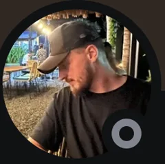
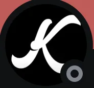
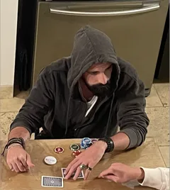
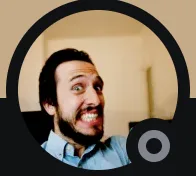

NL100→NL2000


Team de joueurs de poker professionnels Recrutement 2027
Rejoignez l'élite du cash game français.
Clôture des candidatures 2027 dans
Cliquez sur chaque compartiment pour en savoir plus.
CandidaterÉtage 1 · RTS Academy
Pour les joueurs qui jouent autour de la NL100 et qui veulent devenir professionnels dans l'année. Un programme d'un an, au moins 35 heures par semaine, au sein d'une équipe qui vise les plus hautes limites.
RTS Academy · Coachings
En petits groupes, face aux joueurs récréatifs et face aux réguliers. Un fil directeur sur toute l'année, construit par les coachs.
Cliquez sur un coach pour découvrir son parcours.
RTS Academy · Mentorat
Chaque joueur est suivi par son propre mentor, un joueur de la RTS Elite qui a déjà accompli ce que vous voulez accomplir. Une vraie relation se crée avec un joueur plus expérimenté : il connaît le chemin parce qu'il l'a déjà parcouru, et il vous aide à atteindre vos objectifs.
Il répond à vos mains sur le Discord et fait un bilan avec vous chaque mois.
Cliquez sur un mentor pour découvrir son parcours.
RTS Academy · Formation structurée
L'année est découpée en trimestres et en mois. D'un côté, nous fixons avec vous vos objectifs de l'année, de chaque trimestre et de chaque mois : la structure dont a besoin un joueur professionnel.
De l'autre, la formation suit la même structure : un acte par trimestre, un thème par mois sur chaque piste de coaching.
RTS Academy · Communauté
Le Discord est le quartier général de la RTS. C'est là que tout se passe, tous les jours : vous postez vos mains, posez vos questions et échangez avec les autres joueurs, les mentors et les coachs.
Vous y apprenez énormément, et vous ne grindez plus jamais seul.
RTS Academy · Événements
Séminaire de lancement en janvier, séminaire d'été, une conférence chaque mois, des contests par équipes au printemps, en été et en hiver, et le Player of the Month.
Un aperçu ? Regardez notre conférence La réalité du monde du poker professionnel sur YouTube.
Passerelle
Vous montez vite ? Pas besoin d'attendre la saison suivante. Les joueurs de l'Academy qui grimpent rapidement, notamment en atteignant la NL1000 (5/10), peuvent rejoindre la RTS Elite en cours d'année. La décision revient au head coach, au manager de la RTS Academy et au manager de la RTS Elite.
Étage 2 · RTS Elite
Des joueurs déjà professionnels, jusqu'en NL2000. La plupart sont passés par la RTS Academy et ont signé à nouveau pour continuer à évoluer dans la structure.
Vous jouez déjà la NL500, la NL1000 ou la NL2000 ? Nous ne recrutons pas activement pour la RTS Elite, mais il nous arrive d'ouvrir une place à un joueur prometteur. Présentez votre profil et réservez un appel avec Alex.
RTS Elite · Coaching
Des coachings chaque semaine avec des coachs plus expérimentés, joueurs des plus grosses limites.
Cliquez sur un coach pour découvrir son parcours.
RTS Elite · IA
Nous vous apprenons à utiliser l'IA au quotidien pour faire de vous des joueurs de poker next gen : analyser votre jeu, retravailler vos coachings, préparer vos sessions et organiser votre étude. Un avantage que très peu de joueurs ont aujourd'hui.
Et nous utilisons nous-mêmes l'IA pour maximiser votre progression et garantir un apprentissage le plus complet possible.
RTS Elite · Transmettre
Nos mentors sont des joueurs de la RTS Elite. Les meilleurs profils peuvent aussi rejoindre l'équipe de coachs.
RTS Elite · Image
Des conseils en création de contenu pour construire votre image et développer vos réseaux sociaux.
RTS Elite · RTS Wealth
Avec nos partenaires financiers : des solutions pour investir vos gains, l'accès à la banque privée et au crédit, un levier difficile à obtenir quand on est joueur de poker.
Depuis 2022
Rejoignez un programme qui a fait ses preuves et qui a envoyé plusieurs aspirants joueurs de poker en hautes limites.
RTS Academy · une structure de professionnel
Des objectifs fixés pour l'année, chaque trimestre et chaque mois. Un thème par mois sur chaque piste de coaching. Le décollage a lieu au séminaire de janvier.
Fixés ensemble au lancement.
Recalibrage des objectifs avec votre mentor.
Bilan mentor, conférence et Player of the Month.
Acte 1 · Janvier à mars
Séminaire de lancement
Acte 2 · Avril à juin
Spring Contest
Acte 3 · Juillet à septembre
Séminaire d'été · Summer Contest
Acte 4 · Octobre à décembre
Winter Contest · Bilan de saison
La RTS Elite a sa propre saison, avec ses objectifs et son suivi. Son contenu reste réservé à ses joueurs.
Résultats
Des progressions fulgurantes en une seule saison : beaucoup de nos joueurs multiplient leur bankroll par 10 dès leur première année. Les courbes en attestent.
NL100→NL2000
NL100→NL600


NL100→NL1K


Et bien d'autres. Nous n'en montrons que quelques-uns.
Pour des raisons de confidentialité, les courbes de nos joueurs sont anonymes. Courbes issues uniquement des sites trackés : les gains réalisés sur les sites non trackés n'y figurent pas.
Le staff
Les coachs, les mentors et le staff qui accompagnent nos joueurs. Cliquez sur chacun pour découvrir son parcours.
Saison 2027
DIls en parlent
La pédagogie d'Alex, d'Enzo et d'Adrien est tout simplement incroyable. Ça a été un tournant à 180º dans ma manière d'aborder ce jeu qu'on aime tellement.

MaximePromotion RTS 2024Pour moi, c'est l'un des meilleurs investissements pour débuter une carrière ambitieuse et viser des sommets.

KieranPromotion RTS 2024J'ai plus appris et progressé en 1 an chez RTS qu'en plusieurs années seul.

ArnaudPromotion RTS 2024Définitivement le move le plus EV+ pour booster votre carrière.

MathieuPromotion RTS 2024Questions fréquentes
Vous ne payez pas votre coaching à l'avance : RTS se rémunère sur une partie de vos gains. Plus vous gagnez, plus nous gagnons. Un petit dépôt vous est tout de même demandé pour réserver votre place dans la fusée. Les conditions détaillées sont présentées lors de l'entretien.
Au moins 35 heures par semaine : jouer, étudier et participer aux coachings. Votre objectif de volume est fixé avec votre mentor.
Votre mentor suit vos résultats tout au long du mois et fait le bilan avec vous. Les coachs et le groupe sont là pendant les périodes difficiles : c'est l'un des grands avantages d'avancer en équipe.
Non. Coachings en visio et Discord : tout se passe en ligne. Seuls les séminaires sont en présentiel.
En deux étapes. D'abord, vous remplissez le formulaire. Si votre profil nous intéresse, nous vous invitons à un entretien. Nous décidons ensuite si vous avez une place dans la fusée. Réponse fin novembre, début de la saison le 1er janvier 2027.
Oui. Les joueurs de l'Academy qui grimpent rapidement, notamment en atteignant la NL1000 (5/10), peuvent rejoindre la RTS Elite sans attendre la saison suivante. La décision revient au head coach, au manager de la RTS Academy et au manager de la RTS Elite.
Nous ne recrutons pas activement pour la RTS Elite, mais il nous arrive d'ouvrir une place à un joueur prometteur. Présentez votre profil et réservez un appel avec Alex.
Recrutement 2027
Candidatures ouvertes jusqu'au 22 novembre 2026.
Étage 1
Passer pro en une année.
Vous visez la RTS Elite ? Présentez votre profil et réservez un appel de 30 minutes avec Alex.
Réserver un appel RTS EliteVotre parcours, vos résultats, vos objectifs.
Si votre profil nous intéresse, nous vous invitons à un entretien.
Réponse fin novembre. Décollage le 1er janvier 2027.